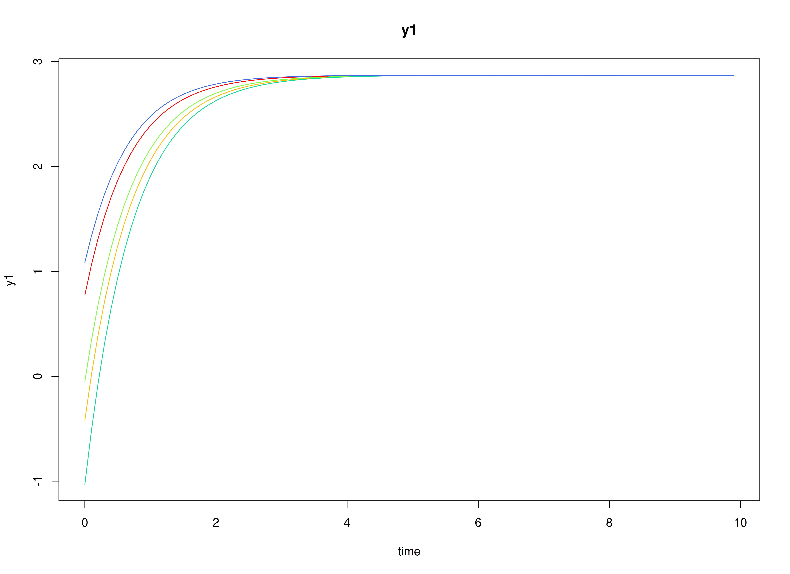
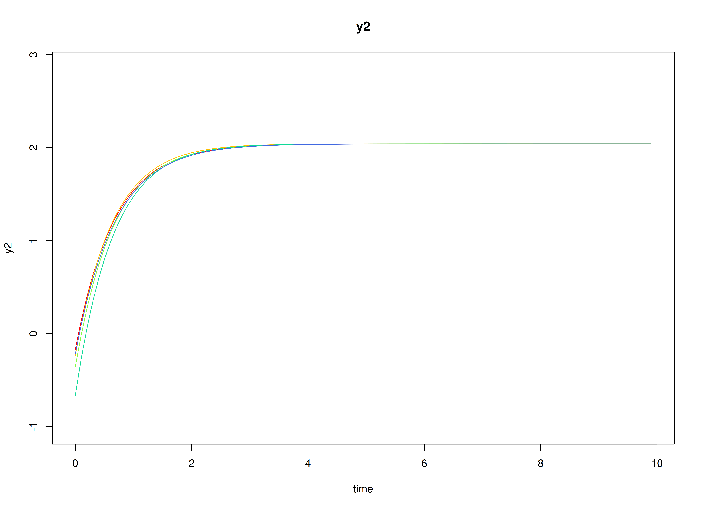
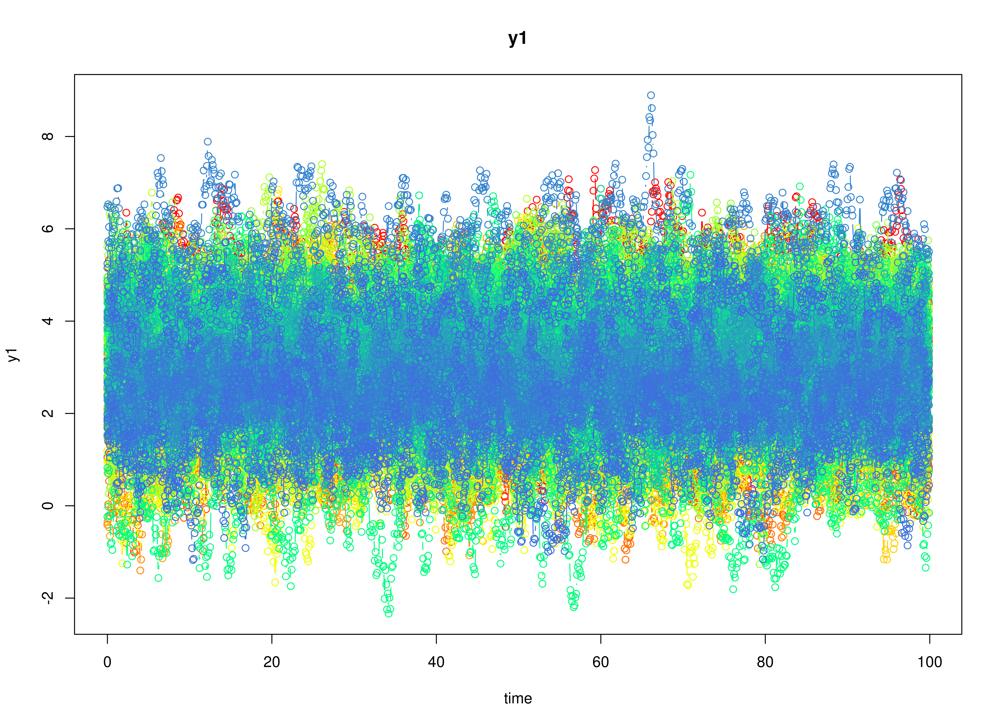
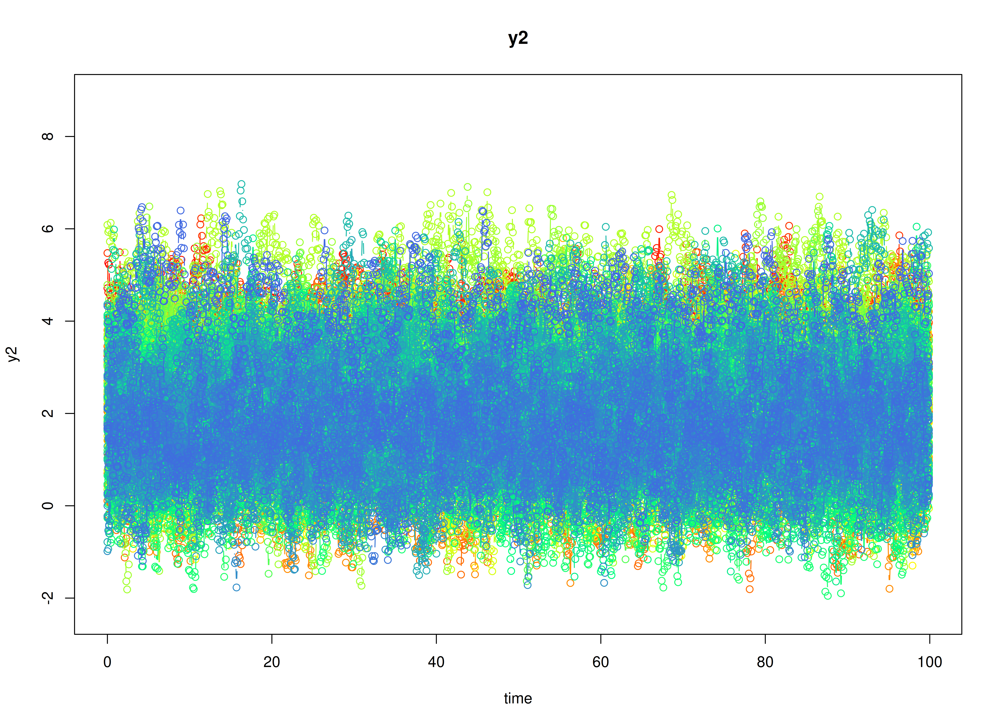

Meta-Analysis of Continuous-Time Vector Autoregressive Model Estimates
Ivan Jacob Agaloos Pesigan
2026-03-12
Source:vignettes/meta-ct-var.Rmd
meta-ct-var.RmdDynamics Description
The Stable Reciprocal Regulation process is modeled as a continuous-time bivariate dynamic system in which two latent psychological constructs (e.g., negative and positive affect) mutually influence each other through their instantaneous rates of change. The dynamics are governed by the continuous-time drift matrix whose negative diagonal elements indicate substantial self-regulation: deviations from a person’s equilibrium are pulled back toward baseline at a moderate-to-strong rate. The negative off-diagonal elements reflect reciprocal inhibition: higher levels of one construct are associated with an increased instantaneous tendency for the other construct to decline. Because the cross-effects are modest relative to the self-regulatory terms, the system exhibits stable, non-oscillatory relaxation back toward person-specific equilibrium points.
Individuals are allowed to differ in both their self-regulatory rates and the strength of these antagonistic couplings. Stochastic disturbances enter through the process-noise covariance, permitting small (potentially correlated) departures from the deterministic drift, while measurement errors are assumed to be minimal and comparable across indicators. Overall, this pattern captures a psychologically plausible mechanism of reciprocal inhibition in which short-term perturbations in one component (e.g., negative affect) are naturally counteracted by compensatory adjustment in the other (e.g., positive affect), supporting emotional homeostasis over time.
Model
The measurement model is given by where and are random variables.
The dynamic structure is given by where is a Wiener process or Brownian motion, which represents random fluctuations, is a random variable, and , and are model parameters. Here, is a vector of latent variables at time and individual . is a matrix of auto and cross effect coefficients for individual , and the covariance matrix of the process noise.
Data Generation
Notation
Let be the number of time points and be the number of individuals.
Let the initial condition be given by and are functions of and .
Let the set point vector be normally distributed with the following means and covariance matrix
Let the transition matrix be normally distributed with the following means and covariance matrix
The SimMuN and SimPhiN functions from the
simStateSpace package generate random set point vectors and
drift matrices from the multivariate normal distribution. Note that the
SimPhiN function generates drift matrices that are weakly
stationary with an option to set lower and upper bounds.
Let the dynamic process noise be given by
R Function Arguments
n
#> [1] 100
time
#> [1] 1000
# first mu0 in the list of length n
mu0[[1]]
#> [1] 2.287769 2.606098
# first sigma0 in the list of length n
sigma0[[1]]
#> [,1] [,2]
#> [1,] 0.5037766 0.1478276
#> [2,] 0.1478276 0.5694164
# first sigma0_l in the list of length n
sigma0_l[[1]] # sigma0_l <- t(chol(sigma0))
#> [,1] [,2]
#> [1,] 0.7097722 0.0000000
#> [2,] 0.2082747 0.7252848
# first alpha in the list of length n
alpha[[1]]
#> [1] 3.312112 3.842713
# first beta in the list of length n
beta[[1]]
#> [,1] [,2]
#> [1,] -1.235608 -0.186227
#> [2,] -0.169327 -1.325864
# first psi in the list of length n
psi[[1]]
#> [,1] [,2]
#> [1,] 1.30 0.57
#> [2,] 0.57 1.56
psi_l[[1]] # psi_l <- t(chol(psi))
#> [,1] [,2]
#> [1,] 1.1401754 0.000000
#> [2,] 0.4999231 1.144586
# first mu (set point) in the list of length n
mu[[1]]
#> [1] 2.287769 2.606098Visualizing the Dynamics Without Process Noise and Measurement Error (n = 5 with Different Initial Condition)


Using the SimSSMLinSDEFixed Function from the
simStateSpace Package to Simulate Data
Note: The
SimSSMLinSDEFixedfunction uses a different set of parameter names. Seehelp(SimSSMLinSDEFixed)for more details.
library(simStateSpace)
sim <- SimSSMLinSDEIVary(
n = n,
time = time,
delta_t = 0.1,
mu0 = mu0,
sigma0_l = sigma0_l,
iota = alpha,
phi = beta,
sigma_l = psi_l,
nu = nu,
lambda = lambda,
theta_l = theta_l
)
data <- as.data.frame(sim)
head(data)
#> id time y1 y2
#> 1 1 0.0 2.523315 3.353060
#> 2 1 0.1 2.309397 3.020899
#> 3 1 0.2 2.600318 3.078564
#> 4 1 0.3 2.698363 2.929001
#> 5 1 0.4 2.444623 2.861375
#> 6 1 0.5 3.190602 2.891174
summary(data)
#> id time y1 y2
#> Min. : 1.00 Min. : 0.00 Min. :-2.335 Min. :-1.951
#> 1st Qu.: 25.75 1st Qu.:24.98 1st Qu.: 2.093 1st Qu.: 1.261
#> Median : 50.50 Median :49.95 Median : 2.990 Median : 2.187
#> Mean : 50.50 Mean :49.95 Mean : 2.975 Mean : 2.185
#> 3rd Qu.: 75.25 3rd Qu.:74.92 3rd Qu.: 3.873 3rd Qu.: 3.081
#> Max. :100.00 Max. :99.90 Max. : 8.893 Max. : 6.970
plot(sim)

Stage 1: Person-Specific VAR Model
The FitVARMxID function fits a VAR model on each
individual
.
fit <- FitVARMxID(
data = data,
observed = c("y1", "y2"),
id = "id",
ct = TRUE,
time = "time",
center = TRUE
)
summary(
fit,
means = TRUE
)
#> Call:
#> FitVARMxID(data = data, observed = c("y1", "y2"), id = "id",
#> time = "time", ct = TRUE, center = TRUE)
#>
#> Convergence:
#> 100.0%
#>
#> Means of the estimated paramaters per individual.
#> mu[1,1] mu[2,1] beta[1,1] beta[2,1] beta[1,2] beta[2,2] psi[1,1] psi[2,1]
#> 2.9743 2.1847 -1.3528 -0.1673 -0.1959 -1.4373 1.3040 0.5685
#> psi[2,2]
#> 1.5566Stage 2: Random-Effects Meta-Analysis of Person-Specific Set Points and Dynamics
We synthesize the person-specific estimates to recover population-level effects and their between-person variability. We use a random-effects model so the pooled mean reflects both within-person estimation uncertainty and between-person heterogeneity.
All available parameters are meta-analyzed by default. Setting
cov_dyn = FALSE, meta-analyzes only the set points and
drift matrix. Setting tau_sqr_l_free, such that covariances
between mu and beta are constained to zero,
simplifies the random effects.
tau_sqr_l_free <- matrix(
data = c(
FALSE, FALSE, FALSE, FALSE, FALSE, FALSE,
TRUE, FALSE, FALSE, FALSE, FALSE, FALSE,
FALSE, FALSE, FALSE, FALSE, FALSE, FALSE,
FALSE, FALSE, TRUE, FALSE, FALSE, FALSE,
FALSE, FALSE, TRUE, TRUE, FALSE, FALSE,
FALSE, FALSE, TRUE, TRUE, TRUE, FALSE
),
byrow = TRUE,
nrow = 6,
ncol = 6
)
# FALSE values in tau_sqr_l_free will be treated as fixed values.
# TRUE values in tau_sqr_l_free will be treated as starting values.
tau_sqr_l_values <- matrix(
data = 0,
nrow = 6,
ncol = 6
)
library(metaDyn)
metavar <- MetaVARMx(
object = fit,
cov_dyn = FALSE,
tau_sqr_l_free = tau_sqr_l_free,
tau_sqr_l_values = tau_sqr_l_values
)
summary(metavar)
#> Call:
#> MetaVARMx(object = fit, tau_sqr_l_free = tau_sqr_l_free, tau_sqr_l_values = tau_sqr_l_values,
#> cov_dyn = FALSE)
#>
#> Status code:
#> 0
#>
#> CI type:
#> "normal"
#>
#> est se z p 2.5% 97.5%
#> alpha[1,1] 2.9742 0.1120 26.5553 0.0000 2.7547 3.1937
#> alpha[2,1] 2.1845 0.1062 20.5783 0.0000 1.9765 2.3926
#> alpha[3,1] -1.3129 0.0238 -55.2242 0.0000 -1.3595 -1.2663
#> alpha[4,1] -0.1670 0.0225 -7.4221 0.0000 -0.2111 -0.1229
#> alpha[5,1] -0.1943 0.0186 -10.4597 0.0000 -0.2307 -0.1579
#> alpha[6,1] -1.3984 0.0251 -55.8086 0.0000 -1.4475 -1.3492
#> tau_sqr[1,1] 1.2471 0.1775 7.0246 0.0000 0.8991 1.5950
#> tau_sqr[2,1] 0.5434 0.1307 4.1583 0.0000 0.2873 0.7996
#> tau_sqr[2,2] 1.1190 0.1593 7.0232 0.0000 0.8067 1.4313
#> tau_sqr[3,3] 0.0209 0.0072 2.8945 0.0038 0.0067 0.0350
#> tau_sqr[4,3] 0.0013 0.0048 0.2586 0.7959 -0.0082 0.0108
#> tau_sqr[5,3] 0.0005 0.0041 0.1170 0.9069 -0.0075 0.0084
#> tau_sqr[6,3] -0.0046 0.0058 -0.7892 0.4300 -0.0159 0.0068
#> tau_sqr[4,4] 0.0088 0.0063 1.3986 0.1619 -0.0035 0.0212
#> tau_sqr[5,4] 0.0045 0.0032 1.4267 0.1537 -0.0017 0.0108
#> tau_sqr[6,4] -0.0038 0.0056 -0.6877 0.4916 -0.0147 0.0071
#> tau_sqr[5,5] 0.0035 0.0036 0.9680 0.3330 -0.0036 0.0106
#> tau_sqr[6,5] 0.0032 0.0042 0.7698 0.4414 -0.0050 0.0114
#> tau_sqr[6,6] 0.0251 0.0079 3.1574 0.0016 0.0095 0.0406
#> i_sqr[1,1] 0.9950 0.0007 1397.5277 0.0000 0.9936 0.9964
#> i_sqr[2,1] 0.9932 0.0010 1034.5138 0.0000 0.9913 0.9951
#> i_sqr[3,1] 0.3866 0.0819 4.7197 0.0000 0.2260 0.5471
#> i_sqr[4,1] 0.2614 0.1046 2.4981 0.0125 0.0563 0.4664
#> i_sqr[5,1] 0.1538 0.1049 1.4661 0.1426 -0.0518 0.3594
#> i_sqr[6,1] 0.4421 0.0735 6.0149 0.0000 0.2981 0.5862Normal Theory Confidence Intervals
confint(metavar, level = 0.95)
#> 2.5 % 97.5 %
#> alpha[1,1] 2.754697920 3.193733175
#> alpha[2,1] 1.976480275 2.392610565
#> alpha[3,1] -1.359474981 -1.266284141
#> alpha[4,1] -0.211132346 -0.122918630
#> alpha[5,1] -0.230690233 -0.157879112
#> alpha[6,1] -1.447460395 -1.349241914
#> tau_sqr[1,1] 0.899135556 1.595042757
#> tau_sqr[2,1] 0.287298520 0.799593547
#> tau_sqr[2,2] 0.806737218 1.431303262
#> tau_sqr[3,3] 0.006747421 0.035049670
#> tau_sqr[4,3] -0.008248909 0.010756532
#> tau_sqr[5,3] -0.007494722 0.008446156
#> tau_sqr[6,3] -0.015888876 0.006766169
#> tau_sqr[4,4] -0.003547420 0.021224104
#> tau_sqr[5,4] -0.001693146 0.010753552
#> tau_sqr[6,4] -0.014733930 0.007079880
#> tau_sqr[5,5] -0.003582845 0.010575514
#> tau_sqr[6,5] -0.004985040 0.011433547
#> tau_sqr[6,6] 0.009510610 0.040645736
#> i_sqr[1,1] 0.993578025 0.996368828
#> i_sqr[2,1] 0.991335998 0.995099449
#> i_sqr[3,1] 0.226027843 0.547081391
#> i_sqr[4,1] 0.056303462 0.466432631
#> i_sqr[5,1] -0.051801426 0.359393016
#> i_sqr[6,1] 0.298060935 0.586200280
confint(metavar, level = 0.99)
#> 0.5 % 99.5 %
#> alpha[1,1] 2.685720483 3.26271061
#> alpha[2,1] 1.911101468 2.45798937
#> alpha[3,1] -1.374116323 -1.25164280
#> alpha[4,1] -0.224991725 -0.10905925
#> alpha[5,1] -0.242129689 -0.14643966
#> alpha[6,1] -1.462891636 -1.33381067
#> tau_sqr[1,1] 0.789800611 1.70437770
#> tau_sqr[2,1] 0.206811138 0.88008093
#> tau_sqr[2,2] 0.708610781 1.52942970
#> tau_sqr[3,3] 0.002300815 0.03949628
#> tau_sqr[4,3] -0.011234880 0.01374250
#> tau_sqr[5,3] -0.009999215 0.01095065
#> tau_sqr[6,3] -0.019448242 0.01032553
#> tau_sqr[4,4] -0.007439309 0.02511599
#> tau_sqr[5,4] -0.003648663 0.01270907
#> tau_sqr[6,4] -0.018161128 0.01050708
#> tau_sqr[5,5] -0.005807285 0.01279995
#> tau_sqr[6,5] -0.007564587 0.01401309
#> tau_sqr[6,6] 0.004618928 0.04553742
#> i_sqr[1,1] 0.993139558 0.99680729
#> i_sqr[2,1] 0.990744718 0.99569073
#> i_sqr[3,1] 0.175586675 0.59752256
#> i_sqr[4,1] -0.008132500 0.53086859
#> i_sqr[5,1] -0.116404755 0.42399634
#> i_sqr[6,1] 0.252790963 0.63147025Robust Confidence Intervals
confint(metavar, level = 0.95, robust = TRUE)
#> 2.5 % 97.5 %
#> alpha[1,1] 2.753595167 3.194835928
#> alpha[2,1] 1.975427810 2.393663029
#> alpha[3,1] -1.358281426 -1.267477696
#> alpha[4,1] -0.211854456 -0.122196521
#> alpha[5,1] -0.230839452 -0.157729893
#> alpha[6,1] -1.445575820 -1.351126489
#> tau_sqr[1,1] 0.908528628 1.585649685
#> tau_sqr[2,1] 0.284665842 0.802226224
#> tau_sqr[2,2] 0.848743506 1.389296975
#> tau_sqr[3,3] 0.006102537 0.035694554
#> tau_sqr[4,3] -0.007485709 0.009993332
#> tau_sqr[5,3] -0.007525424 0.008476859
#> tau_sqr[6,3] -0.015341374 0.006218667
#> tau_sqr[4,4] -0.002283607 0.019960290
#> tau_sqr[5,4] -0.001047066 0.010107472
#> tau_sqr[6,4] -0.012836700 0.005182651
#> tau_sqr[5,5] -0.002928275 0.009920944
#> tau_sqr[6,5] -0.004278437 0.010726945
#> tau_sqr[6,6] 0.005258147 0.044898199
#> i_sqr[1,1] 0.993615694 0.996331158
#> i_sqr[2,1] 0.991608488 0.994826960
#> i_sqr[3,1] 0.218712000 0.554397234
#> i_sqr[4,1] 0.072856492 0.449879601
#> i_sqr[5,1] -0.024244107 0.331835696
#> i_sqr[6,1] 0.226365579 0.657895637
confint(metavar, level = 0.99, robust = TRUE)
#> 0.5 % 99.5 %
#> alpha[1,1] 2.6842712195 3.264159876
#> alpha[2,1] 1.9097182949 2.459372544
#> alpha[3,1] -1.3725477260 -1.253211396
#> alpha[4,1] -0.2259407384 -0.108110238
#> alpha[5,1] -0.2423257958 -0.146243549
#> alpha[6,1] -1.4604148850 -1.336287424
#> tau_sqr[1,1] 0.8021451999 1.692033113
#> tau_sqr[2,1] 0.2033512131 0.883540853
#> tau_sqr[2,2] 0.7638164007 1.474224080
#> tau_sqr[3,3] 0.0014532938 0.040343797
#> tau_sqr[4,3] -0.0102318653 0.012739489
#> tau_sqr[5,3] -0.0100395653 0.010991000
#> tau_sqr[6,3] -0.0187287022 0.009605995
#> tau_sqr[4,4] -0.0057783762 0.023455060
#> tau_sqr[5,4] -0.0027995706 0.011859977
#> tau_sqr[6,4] -0.0156677456 0.008013696
#> tau_sqr[5,5] -0.0049470337 0.011939703
#> tau_sqr[6,5] -0.0066359535 0.013084461
#> tau_sqr[6,6] -0.0009697561 0.051126102
#> i_sqr[1,1] 0.9931890636 0.996757789
#> i_sqr[2,1] 0.9911028290 0.995332619
#> i_sqr[3,1] 0.1659720271 0.607137207
#> i_sqr[4,1] 0.0136218691 0.509114224
#> i_sqr[5,1] -0.0801882983 0.387779888
#> i_sqr[6,1] 0.1585672927 0.725693922- The fixed part of the random-effects model gives pooled means .
- The random part yields between-person covariances () quantifying heterogeneity in set point () and dynamics () across individuals.
means <- extract(metavar, what = "alpha")
means
#> alpha
#> y1 2.9742155
#> y2 2.1845454
#> y3 -1.3128796
#> y4 -0.1670255
#> y5 -0.1942847
#> y6 -1.3983512
covariances <- extract(metavar, what = "tau_sqr")
covariances
#> y1 y2 y3 y4 y5 y6
#> y1 1.247089 0.543446 0.0000000000 0.000000000 0.0000000000 0.000000000
#> y2 0.543446 1.119020 0.0000000000 0.000000000 0.0000000000 0.000000000
#> y3 0.000000 0.000000 0.0208985452 0.001253812 0.0004757173 -0.004561354
#> y4 0.000000 0.000000 0.0012538118 0.008838342 0.0045302032 -0.003827025
#> y5 0.000000 0.000000 0.0004757173 0.004530203 0.0034963346 0.003224254
#> y6 0.000000 0.000000 -0.0045613535 -0.003827025 0.0032242538 0.025078173Summary
This vignette demonstrates a two-stage hierarchical estimation
approach for dynamic systems: 1. individual-level CT-VAR estimation,
and
2. population-level meta-analysis of person-specific set points and
dynamics.